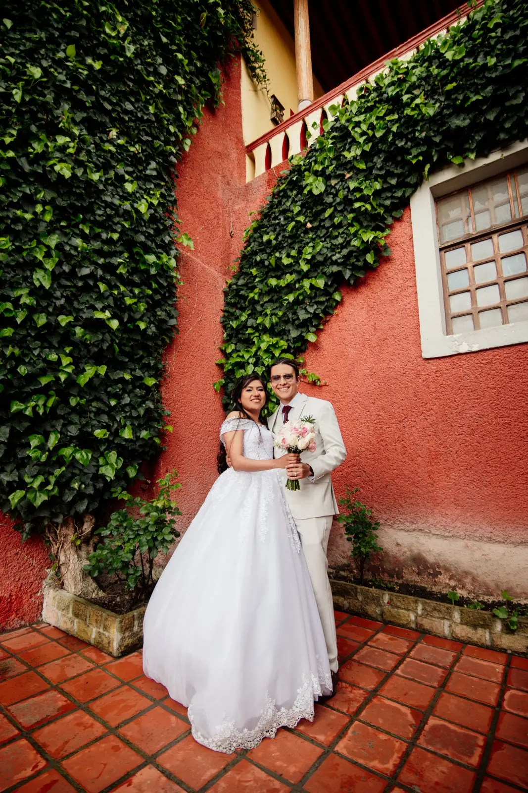
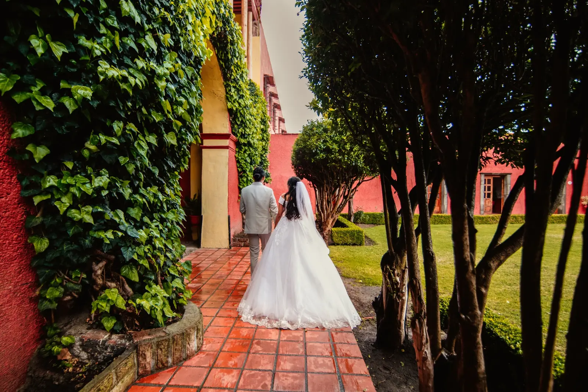
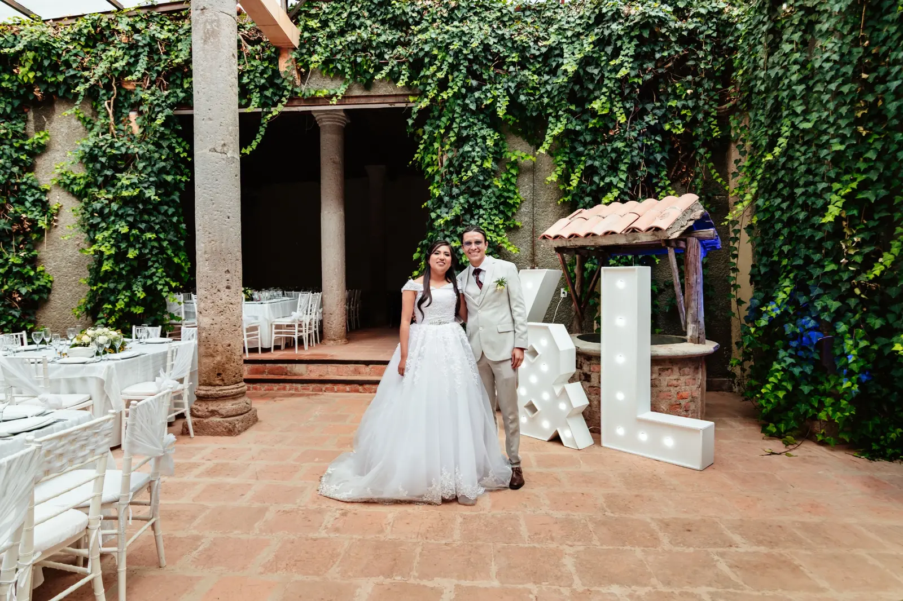
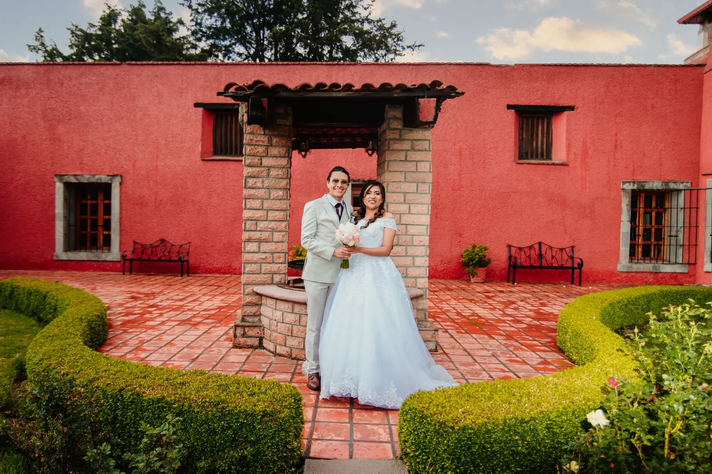
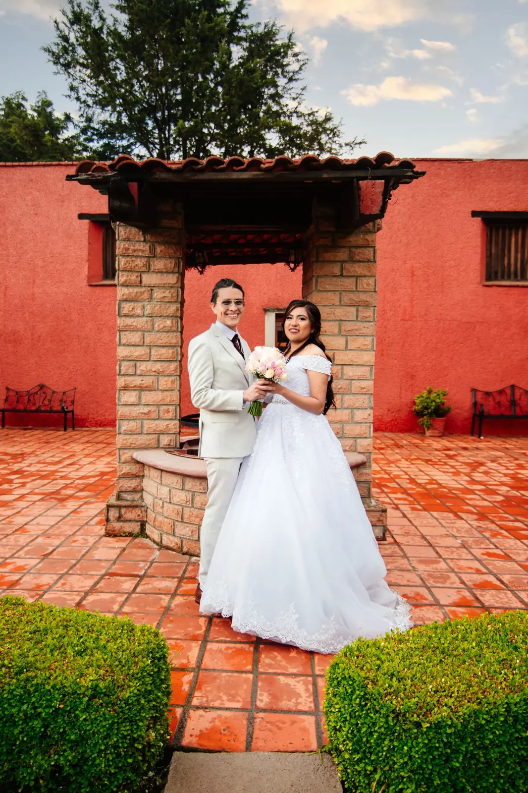
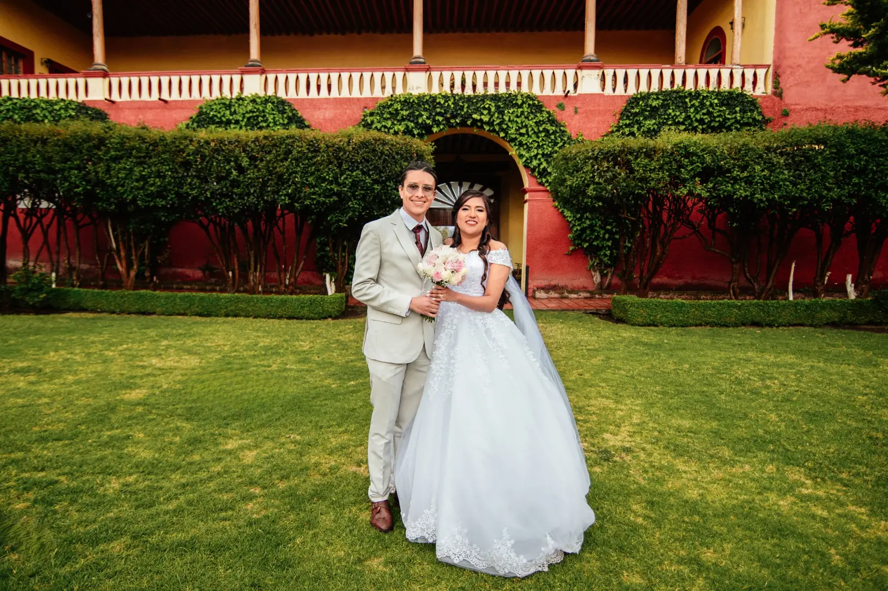

Una boda entre Tlaxcala y Tlaxco
Luis & Marlen
Ex Convento de Tlaxcala · Hacienda San Buenaventura
Una boda joven, divertida y marcada por la lluvia.
Luis y Marlen celebraron su matrimonio en abril de 2024. La misa tuvo lugar en el Ex Convento de Tlaxcala y después viajaron a Tlaxco para reunirse con sus invitados en Hacienda San Buenaventura.
Familiares y amigos llegaron desde otro estado para acompañarlos. Aunque la lluvia estuvo presente durante buena parte del día, la celebración conservó su energía y encontró en la música y el baile su mejor respuesta.

Un día de lluvia, jardines intensos y mucho color.
Una selección editorial que reúne la personalidad de la pareja y el carácter de Hacienda San Buenaventura.





Tlaxco, Tlaxcala
Una hacienda de jardines intensos y muros llenos de color.
La arquitectura de Hacienda San Buenaventura, sus patios mojados y el contraste entre la vegetación y los muros rojos dieron forma a una sesión breve, pero con una identidad visual muy clara.
Luis y Marlen son esposos jóvenes, divertidos y muy bailadores. La música típica de Guerrero llenó la recepción y convirtió la pista en el punto de encuentro de dos familias dispuestas a celebrar sin importar la lluvia.
Fotógrafo de bodas en Tlaxcala
Fotografía con una mirada editorial y auténtica.
Documentamos bodas en Tlaxcala y Puebla priorizando las emociones, la personalidad de cada pareja y los espacios que hacen única cada celebración.
- ParejaLuis y Marlen
- FechaAbril de 2024
- MisaEx Convento de Tlaxcala
- RecepciónHacienda San Buenaventura
- UbicaciónTlaxco, Tlaxcala
- CoberturaFotografía